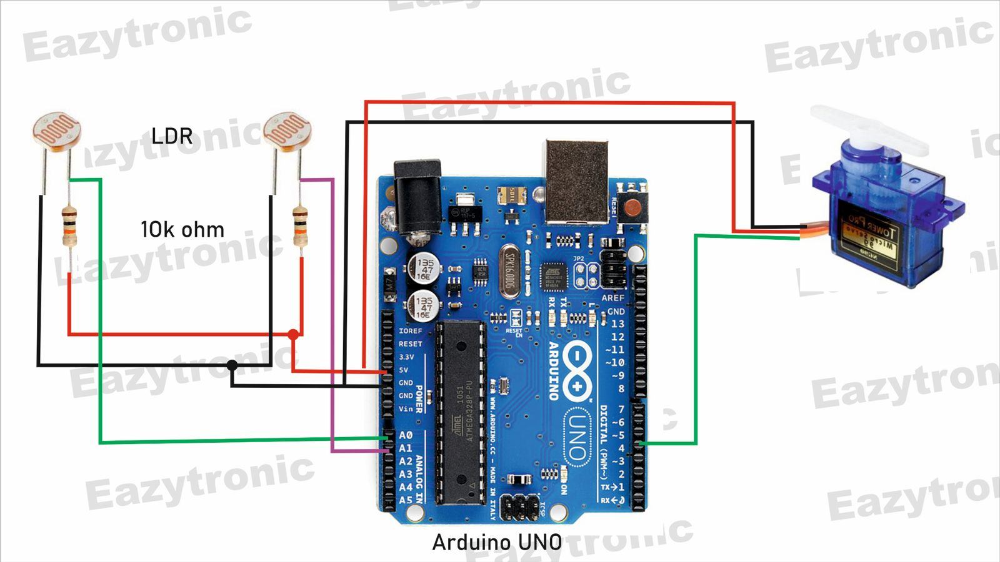

Gabriel Brito
Coordena a integração eletrônica e cuida da instrumentação para garantir leituras fiéis dos LDR.
Disciplina de Sistemas Digitais · Introdução à Computação
Um tracker acessível, baseado em Arduino e sensores LDR, que mantém o painel sempre alinhado à maior luminosidade para maximizar a eficiência energética.
Matriz com LDR Arduino Uno Estrutura em papelão
Descrição do Projeto
Motivação: A crescente demanda por eficiência energética exige soluções que capturem toda a luz disponível. Um sistema de rastreamento solar mantém o painel apontado para a fonte mais intensa, aumentando sensivelmente o rendimento.
Objetivo: Desenvolver um tracker de baixo custo com Arduino Uno e dois LDRs para detectar a diferença de luminosidade e movimentar o eixo automaticamente, servindo como base prática para estudos de automação e energia renovável.
Contextualização: Inserido no universo de Sistemas Digitais e automação, o SolarTrack combina eletrônica básica e programação embarcada. É uma versão didática, replicável e ideal para o ambiente acadêmico.
Esquema Conceitual
Inclua nesta área o diagrama do seu circuito ou protótipo físico. O arquivo está no pacote para download.Palavras-chave
Autores
Coordena a integração eletrônica e cuida da instrumentação para garantir leituras fiéis dos LDR.
Lidera o firmware e testa diferentes curvas de mapeamento para suavizar o movimento do eixo.
Cuida da prototipagem física em papelão e documenta cada iteração com fotos para a disciplina.
Responsável pelo design da experiência e pela linha editorial desta landing page.
Cuida da automação de testes e produz o conteúdo audiovisual para o vídeo tutorial.
Documenta o processo, faz benchmarking com trackers comerciais e valida as lições aprendidas.
Queremos ver sua versão! Marque o time no LinkedIn quando publicar o protótipo final.
Ver publicaçãoComponentes e suprimentos
| Componente | Qtd. | Descrição |
|---|---|---|
| LDR (sensor de luz) | 2 | Detectam a intensidade luminosa em cada lado e permitem comparar qual direção está mais iluminada. |
| Resistores 1 kΩ | 2 | Combinados aos LDRs formam divisores de tensão estáveis para leitura analógica. |
| Servo motor SG90 | 1 | Executa o movimento do eixo, seguindo o comando enviado pelo Arduino. |
| Arduino Uno | 1 | Microcontrolador que lê os sensores e executa a lógica de movimentação. |
| Palito de churrasco | 1 | Serve de eixo leve, permitindo que o suporte gire suavemente. |
| Cola quente | n/a | Fixação rápida de sensores e suportes sobre o papelão. |
| Papelão | n/a | Estrutura física, base e barreira entre os sensores. |
Aplicativos e plataformas
| Ferramenta | Versão | Função |
|---|---|---|
| Arduino IDE | 2.x.x | Programação e upload do firmware para o Arduino Uno. |
| YouTube | - | Publicação e hospedagem do vídeo demonstrativo. |
| GitHub | - | Repositório com código-fonte e arquivos auxiliares. |
Passo a passo

Corte um pedaço firme de papelão que servirá como base. Esse suporte precisa estar nivelado para sustentar o eixo e os sensores.

Fixe o palito de churrasco na base usando cola quente. Ele será o eixo que orienta o módulo sensor. Verifique se o palito se move livremente.

Instale os dois LDRs lado a lado e coloque entre eles uma pequena barreira de papelão. Isso amplia a diferença de iluminação percebida.

Monte dois divisores de tensão com os resistores de 1 kΩ e ligue as saídas nos pinos A0 e A1 do Arduino. Alimente tudo com 5 V do próprio Uno.

Conecte o Arduino ao computador, abra a Arduino IDE, cole o firmware e faça o upload. Use o Serial Monitor para conferir as leituras.

Direcione uma lanterna para cada lado e observe se o eixo acompanha a luz mais forte. Ajuste o mapeamento se notar atraso ou jitter.
Código essencial
O firmware compara os LDRs, calcula o erro e atualiza o eixo em ângulos seguros. Mantemos o código compacto para facilitar o estudo.
// Techatronic.com
#include <Servo.h>
Servo sg90;
int initial_position = 90;
int LDR1 = A0;
int LDR2 = A1;
int error = 5;
int servopin = 4;
void setup() {
sg90.attach(servopin);
pinMode(LDR1, INPUT);
pinMode(LDR2, INPUT);
sg90.write(initial_position);
delay(2000);
}
void loop() {
int R1 = analogRead(LDR1);
int R2 = analogRead(LDR2);
Serial.println(R1);
Serial.println("LDR1");
Serial.println(R2);
Serial.println("LDR1");
delay(300);
int diff1 = abs(R1 - R2);
int diff2 = abs(R2 - R1);
if ((diff1 <= error) || (diff2 <= error)) {
// dentro da tolerância, não move
} else {
if (R1 > R2) {
initial_position = --initial_position;
}
if (R1 < R2) {
initial_position = ++initial_position;
}
}
sg90.write(initial_position);
delay(100);
}Download do projeto
Receba o código-fonte, esquema conceitual, checklist de montagem e este guia em formato offline.
Baixar .zipVídeo tutorial
Problemas e lições